Service Portal
사용 중인 서비스들의 요약 정보와 구성원들의 권한, Cloud Account, 서비스 권한 그룹을 관리할 수 있습니다.
권한 관리
Service Portal - Permission로그인한 사용자가 접근할 수 있는 회사, 서비스, 클라우드 서비스의 Account 들을 각각 그룹으로 만들 수 있습니다.
만들어진 회사, 서비스, 클라우드 Account 그룹들을 유저 그룹에 연결해 유저 그룹에 포함된 사용자들의 권한을 제어할 수 있습니다.
권한 관리 메뉴에서는 회사, 서비스, 클라우드 Account 들을 그룹으로 구성하고, 구성된 그룹들의 수정 및 삭제가 가능합니다.
컴퍼니 그룹 : 여러 회사를 그룹으로 묶어 그룹사로 관리할 수 있습니다.
서비스 권한 그룹 : 서비스 및 각 메뉴와, 메뉴에 대한 권한들을 그룹으로 묶어 관리할 수 있습니다.
클라우드 그룹 : 클라우드 벤더와 벤더 별 Account(Subscription)들을 그룹으로 관리할 수 있습니다.
위 그룹들은 아래와 같은 구조로 연결되어 있습니다.

1. 컴퍼니 그룹
Service Portal - Permission - Company Group개별 회사들을 컴퍼니 그룹으로 묶을 수 있습니다.
부서 별로 가입 후 가입한 부서들을 컴퍼니 그룹으로 묶어 한 회사로 관리하거나 계열사 별로 가입 후 계열사들을 하나의 그룹으로 묶어 그룹사로 관리할 수 있습니다.
1.1 컴퍼니 그룹 정보 보기
이미 추가된 컴퍼니 그룹의 정보를 확인할 수 있습니다.
-
컴퍼니 그룹 목록에서 정보를 확인할 컴퍼니 그룹을 클릭합니다.
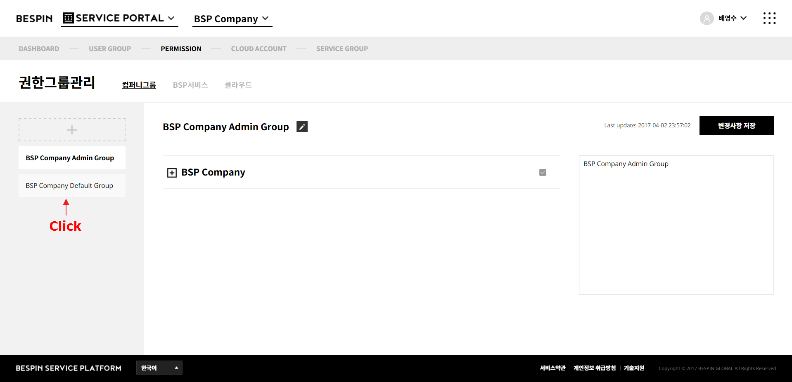
- 컴퍼니 그룹 상세 화면에 선택한 컴퍼니 그룹에 포함된 회사들의 목록이 표시됩니다.
-
회사 목록에서 [+] 버튼을 클릭해 선택한 회사에서 사용 중인 서비스 정보를 확인할 수 있습니다.
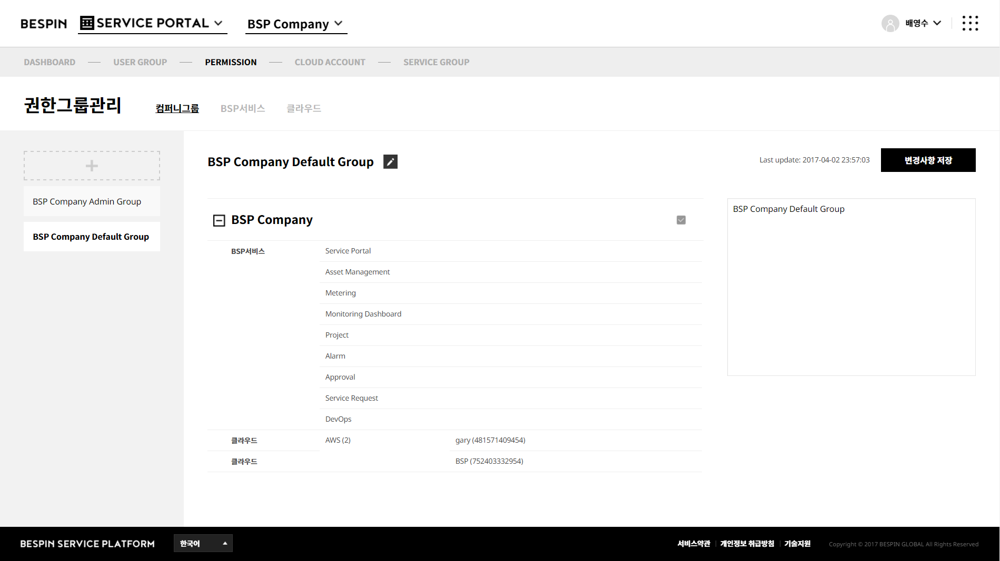
1.2 컴퍼니 그룹 만들기
새로운 컴퍼니 그룹을 생성하고, 컴퍼니 그룹에 회사를 추가할 수 있습니다.
-
[컴퍼니 그룹 추가] 버튼을 클릭합니다.
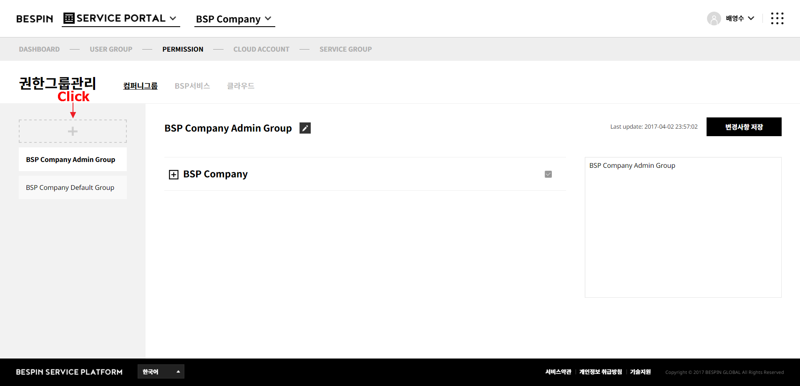
-
"새로운 컴퍼니 그룹 생성" 팝업이 표시됩니다.
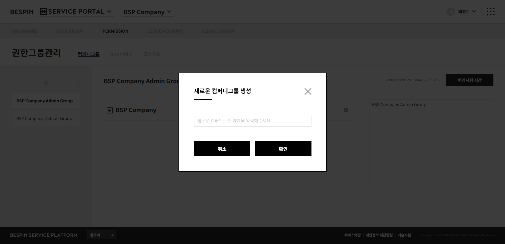
-
"새로운 컴퍼니 그룹 생성" 팝업에서 추가할 컴퍼니 그룹의 이름을 입력하고 [확인] 버튼을 클릭합니다.
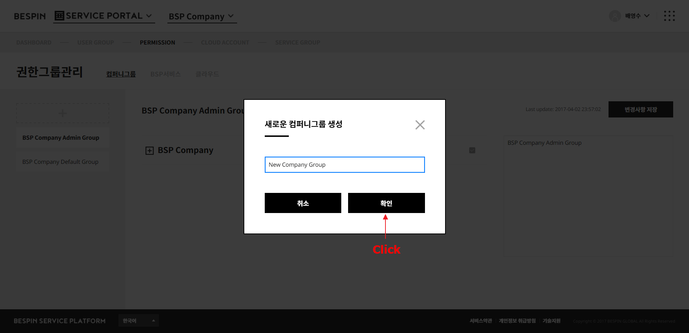
-
컴퍼니 그룹 목록에 새로운 컴퍼니 그룹이 추가된 것을 확인할 수 있습니다.
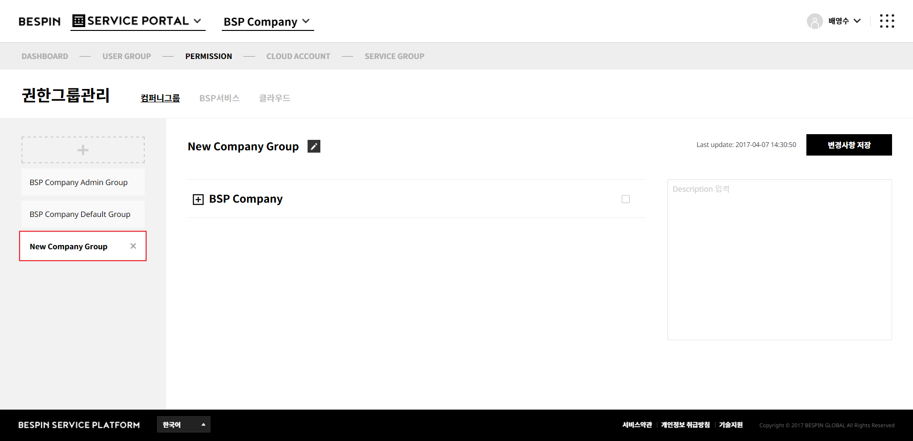
-
컴퍼니 그룹 상세 화면에서 컴퍼니 그룹에 추가할 수 있는 회사의 목록이 표시됩니다.
체크박스를 선택해 추가할 회사를 선택합니다.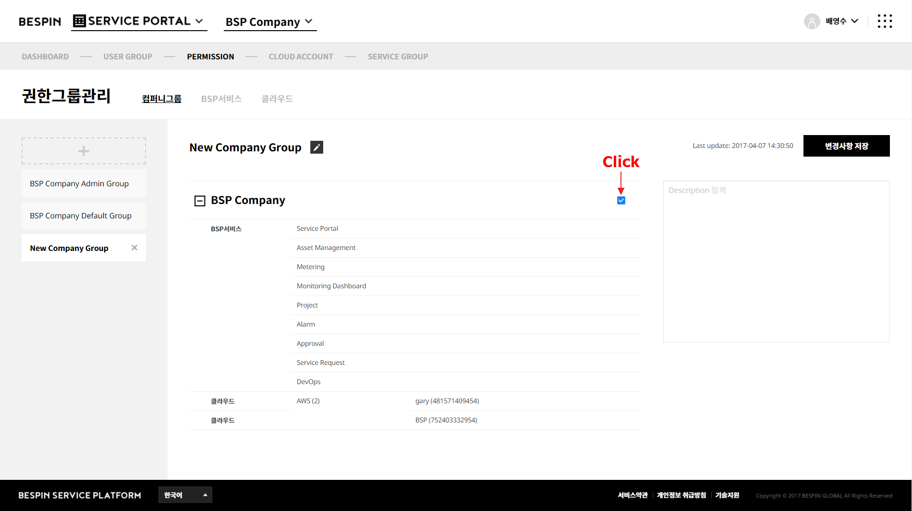 -
[변경사항 저장] 버튼을 클릭합니다.
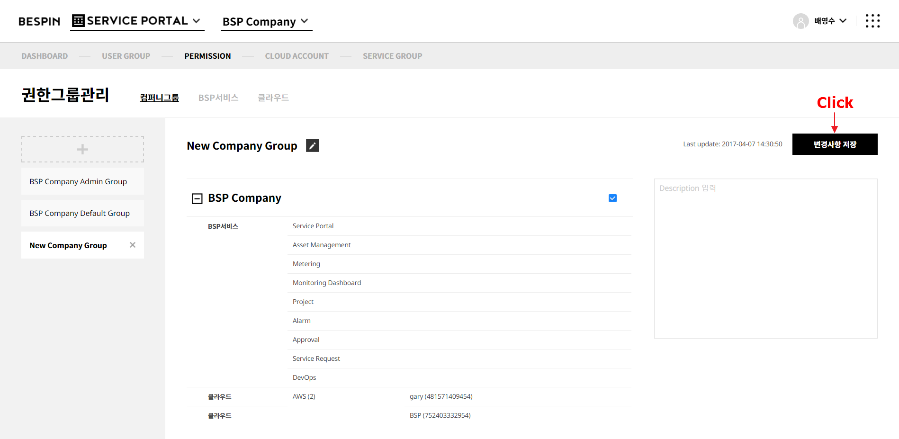
- 새로운 컴퍼니 그룹의 추가가 완료되었습니다.
1.3 컴퍼니 그룹 수정하기
이미 추가된 컴퍼니 그룹의 이름을 변경할 수 있고, 새로운 회사를 추가하거나 추가된 회사를 제거할 수 있습니다.
1.3.1 컴퍼니 그룹 이름 바꾸기
- 컴퍼니 그룹 목록에서 이름을 변경할 컴퍼니 그룹을 선택합니다.
- 컴퍼니 그룹 상세 화면에 선택한 컴퍼니 정보가 표시됩니다.
-
컴퍼니 그룹 이름 옆의 [수정] 버튼을 클릭합니다.
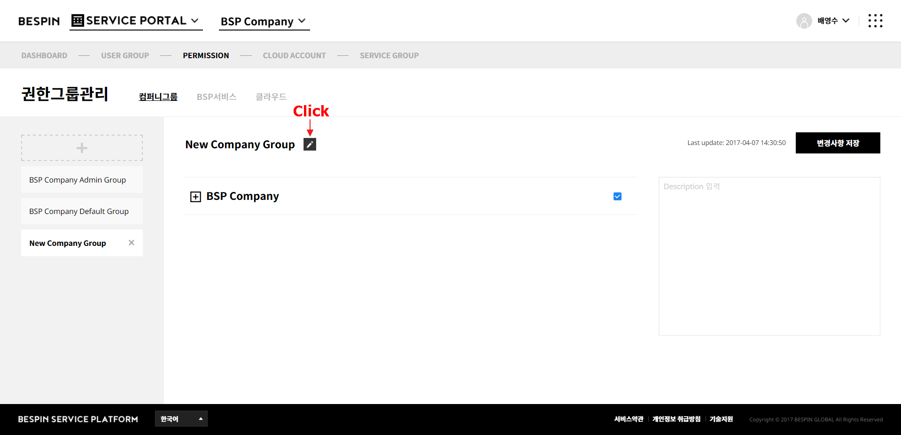
-
컴퍼니 그룹의 이름이 편집 가능한 상태로 변경됩니다.
컴퍼니 그룹의 이름을 변경합니다.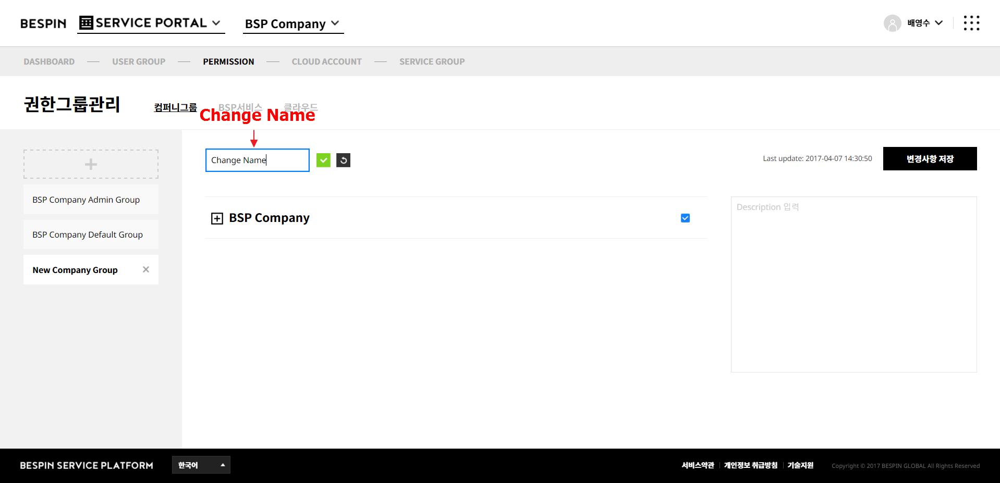 -
이름 변경 후, [{체크}] 버튼을 클릭합니다.
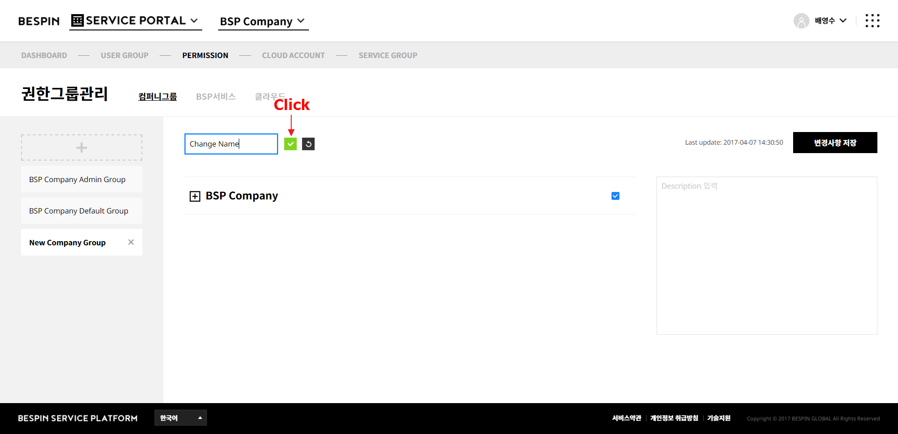
- 컴퍼니 그룹의 이름 변경이 완료되었습니다.
1.3.2 컴퍼니 그룹 내 회사 추가/제거하기
- 컴퍼니 그룹 목록에서 회사를 추가/제거할 컴퍼니 그룹을 선택합니다.
- 컴퍼니 그룹 상세 화면에 선택한 컴퍼니 그룹에 추가되었거나, 추가할 수 있는 회사들의 목록이 표시됩니다.
-
이미 추가된 회사의 체크박스를 선택 해제 하거나(제거), 추가할 회사의 체크박스를 선택합니다.(추가)
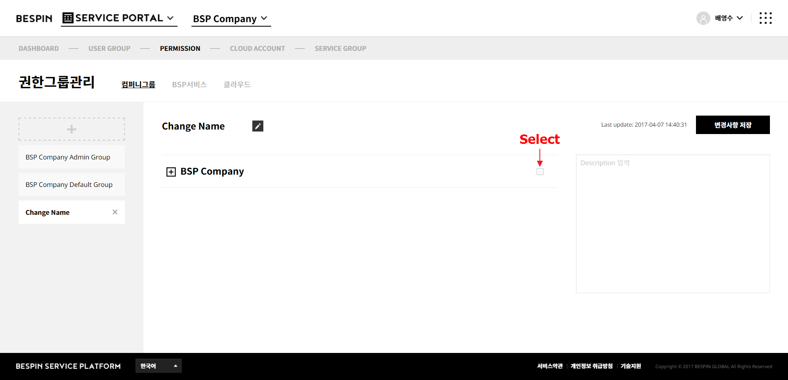
-
[변경사항 저장] 버튼을 클릭합니다.
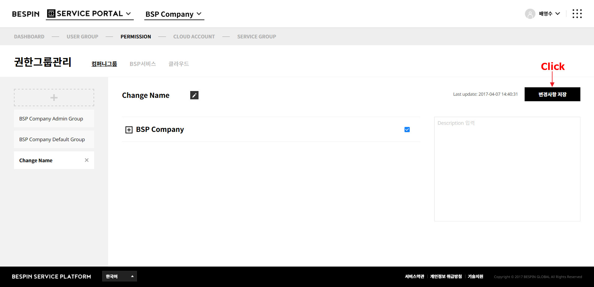
- 컴퍼니 그룹 내 회사 추가/제거가 완료되었습니다.
1.4 컴퍼니 그룹 삭제하기
추가된 컴퍼니 그룹을 삭제할 수 있습니다.
- 컴퍼니 그룹 목록에서 삭제할 컴퍼니 그룹을 선택합니다.
-
[X] 버튼을 클릭합니다.
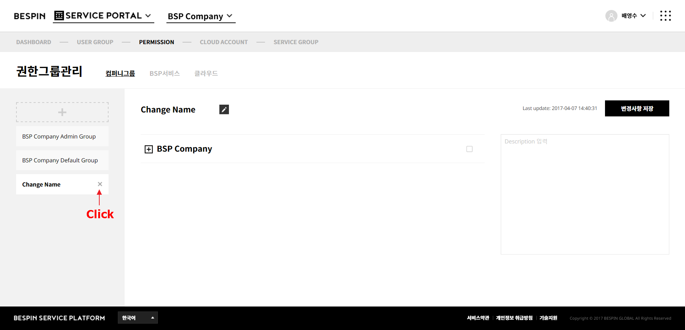
-
그룹 삭제를 확인하는 팝업이 표시됩니다.
팝업의 [확인] 버튼을 클릭합니다.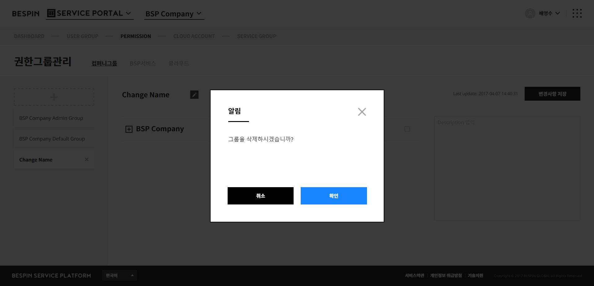 - 컴퍼니 그룹의 삭제가 완료되었습니다.
2. 서비스 권한 그룹
Service Portal - Permission - Service서비스들과 서비스 내 메뉴들의 편집 권한의 묶음을 그룹으로 만들 수 있습니다.
서비스 권한 그룹을 유저 그룹에 연결해 간편하게 유저 그룹 내 유저들이 볼 수 있는 메뉴와 메뉴 별 편집 권한을 설정할 수 있습니다.
2.1 서비스 권한 그룹 정보 보기
이미 추가된 서비스 권한 그룹의 정보를 확인할 수 있습니다.
-
서비스 권한 그룹 목록에서 정보를 확인할 컴퍼니 그룹을 클릭합니다.
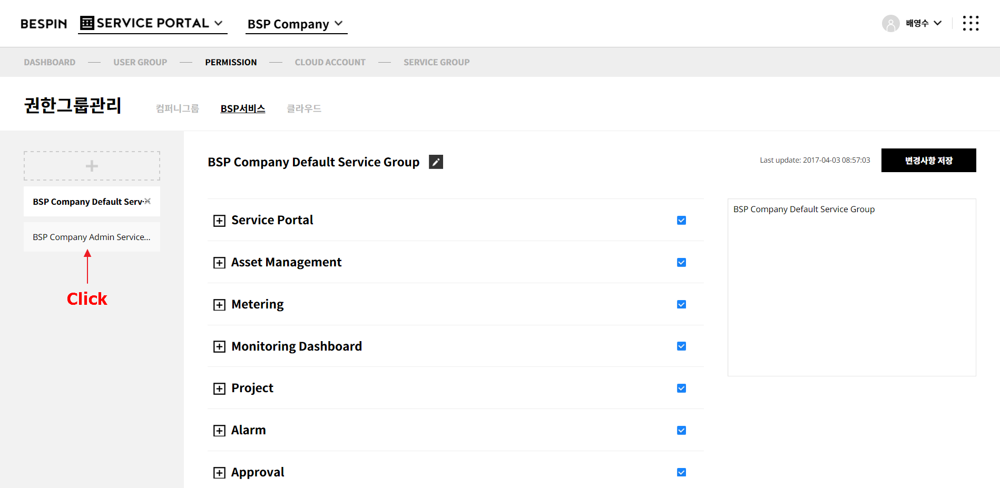
-
서비스 권한 그룹 상세 화면에 선택한 서비스 권한 그룹에 포함된 서비스들이 표시됩니다.
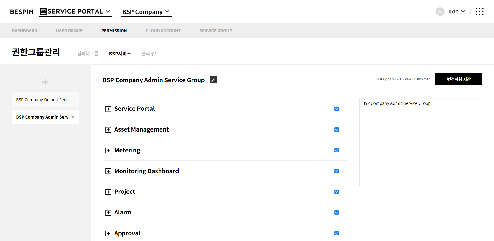
-
서비스 별 [+] 버튼을 클릭해 서비스에서 사용 가능한 메뉴와 메뉴 별 권한을 확인할 수 있습니다.
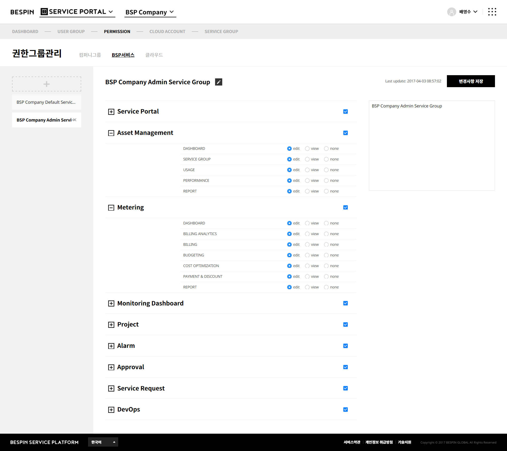
2.2 서비스 권한 그룹 만들기
새로운 서비스 권한 그룹을 만들고, 서비스 권한 그룹에 서비스/메뉴 별 권한을 설정할 수 있습니다.
-
[서비스 권한 그룹 추가] 버튼을 클릭합니다.
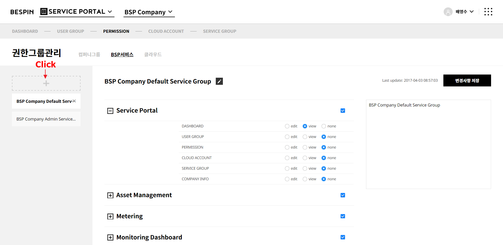
-
"새로운 서비스 권한 그룹 생성" 팝업이 표시됩니다.
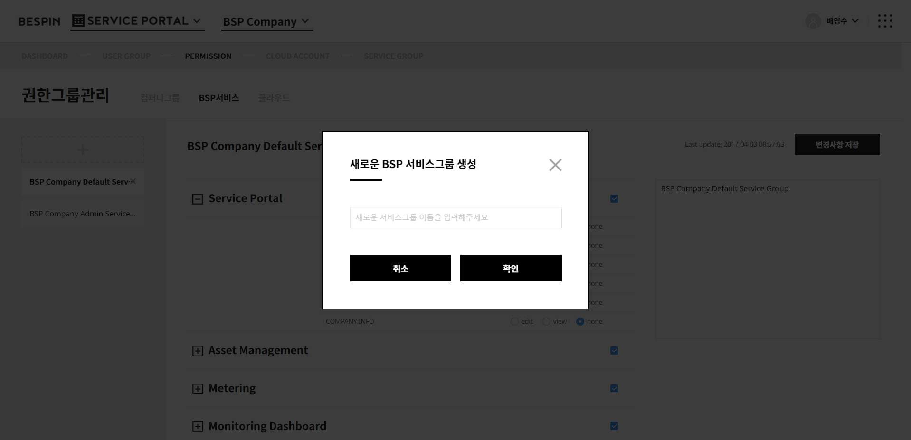
-
"새로운 서비스 권한 그룹 생성" 팝업에서 추가할 서비스 권한 그룹의 이름을 입력하고 [확인] 버튼을 클릭합니다.
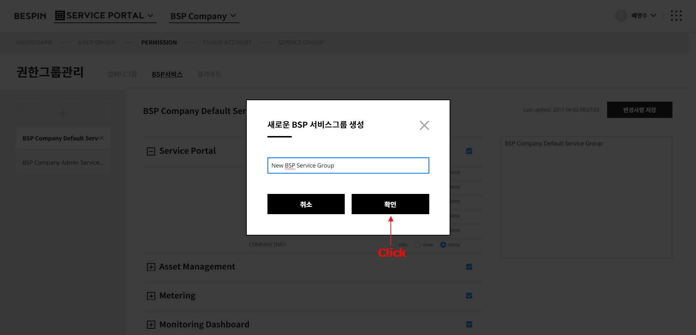
-
서비스 권한 그룹 목록에 새로운 서비스 권한 그룹이 추가된 것을 확인할 수 있습니다.
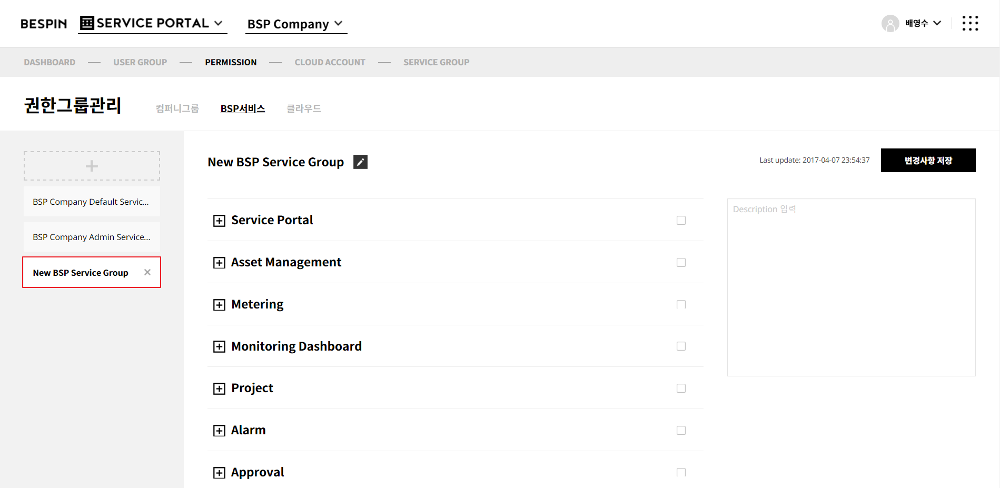
-
서비스 권한 그룹 상세 화면에 선택 가능한 서비스들의 목록이 표시됩니다.
이 목록에는 신청한 서비스들이 표시됩니다.
서비스 이름 앞의 [+] 버튼을 클릭해 서비스 내 메뉴 별 상세 권한을 설정할 수 있습니다.
체크박스를 선택해 메뉴 별 권한을 설정합니다.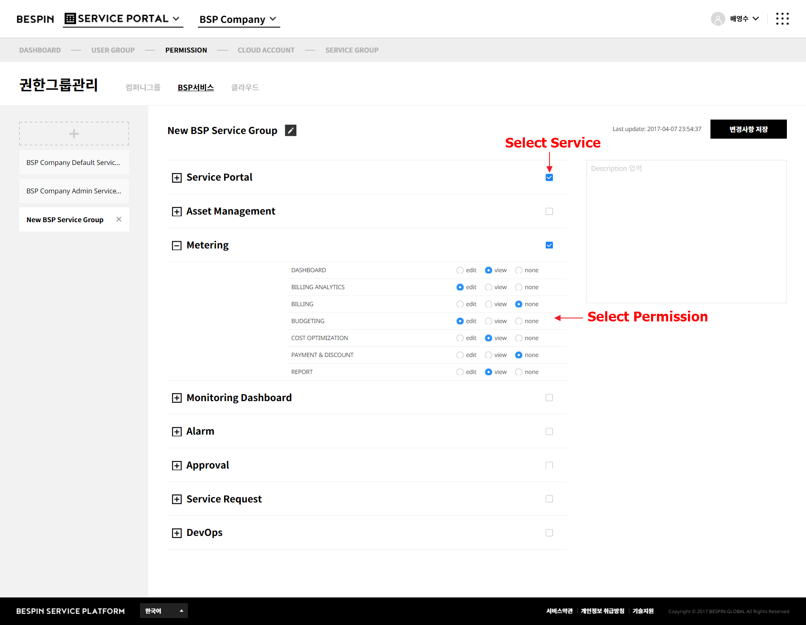 -
[변경사항 저장] 버튼을 클릭합니다.
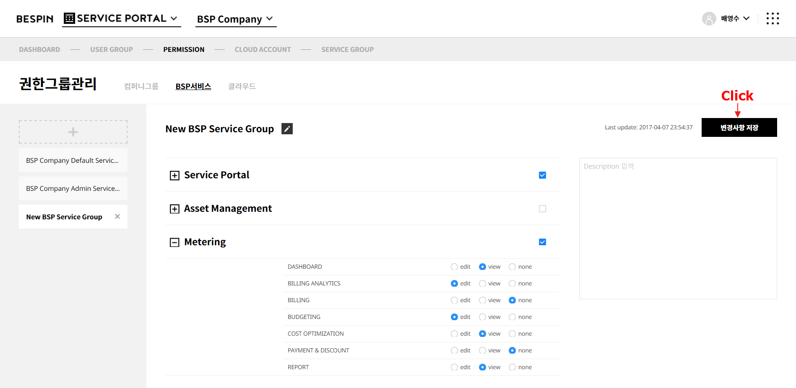
- 새로운 서비스 권한 그룹의 추가가 완료되었습니다.
2.3 서비스 권한 그룹 수정하기
이미 추가된 서비스 권한 그룹의 이름을 변경할 수 있고, 서비스 별 권한을 변경할 수 있습니다.
2.3.1 서비스 권한 그룹 이름 바꾸기
- 서비스 권한 그룹 목록에서 이름을 변경할 서비스 권한 그룹을 선택합니다.
- 서비스 권한 그룹 상세 화면에 선택한 서비스 권한 그룹 정보가 표시됩니다.
-
서비스 권한 그룹 이름 옆의 [{연필 아이콘}] 버튼을 클릭합니다.
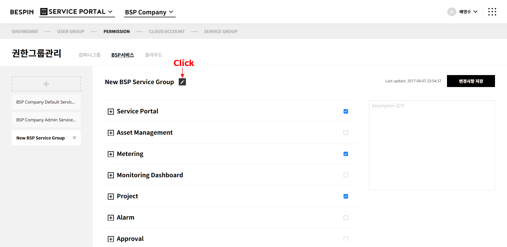
-
서비스 권한 그룹의 이름이 편집 가능한 상태로 변경됩니다.
서비스 권한 그룹의 이름을 변경합니다.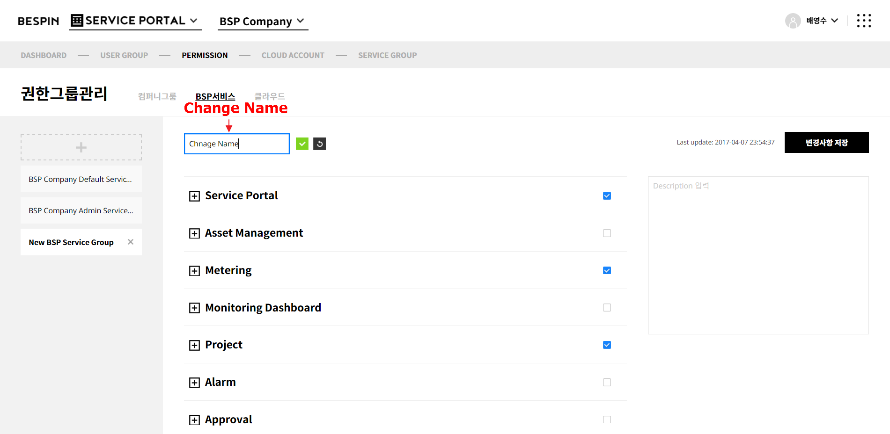 -
이름 변경 후, [확인] 버튼을 클릭합니다.
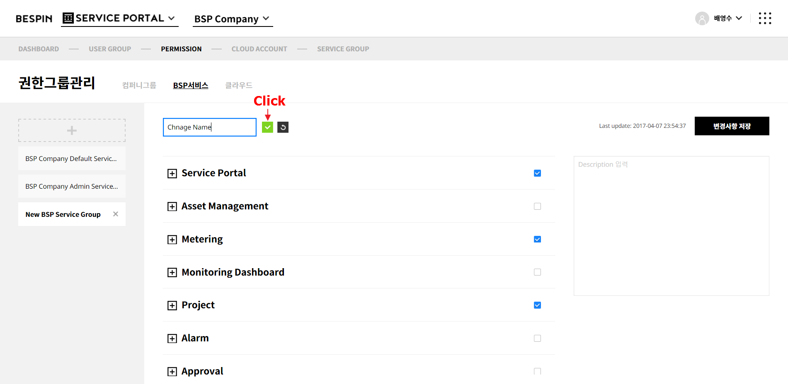
- 서비스 권한 그룹의 이름 변경이 완료되었습니다.
2.3.2 서비스 권한 그룹의 권한 변경하기
- 서비스 권한 그룹 목록에서 권한을 변경할 서비스 권한 그룹을 선택합니다.
- 서비스 권한 그룹 상세 화면에 선택한 서비스 권한 그룹에서 사용 가능한 서비스의 목록과 서비스 내 메뉴의 권한을 확인할 수 있습니다.
-
서비스 내 메뉴의 체크박스를 선택 해제 하거나(권한 제거), 메뉴 별 권한을 변경할 수 있습니다.(권한 변경)
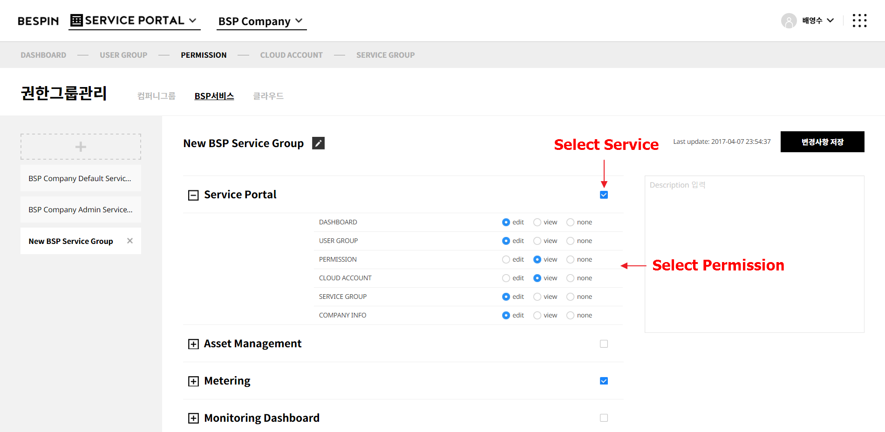
-
[변경사항 저장] 버튼을 클릭합니다.

- 서비스 권한 그룹 내 권한 변경이 완료되었습니다.
2.4 서비스 권한 그룹 삭제하기
추가된 서비스 권한 그룹을 삭제할 수 있습니다.
- 서비스 권한 그룹 목록에서 삭제할 서비스 권한 그룹을 선택합니다.
-
[X] 버튼을 클릭합니다.
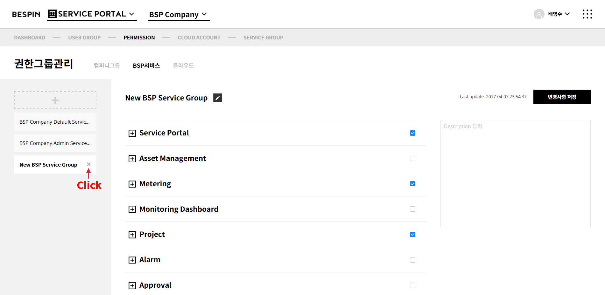
-
그룹 삭제를 확인하는 팝업이 표시됩니다.
팝업의 [확인] 버튼을 클릭합니다.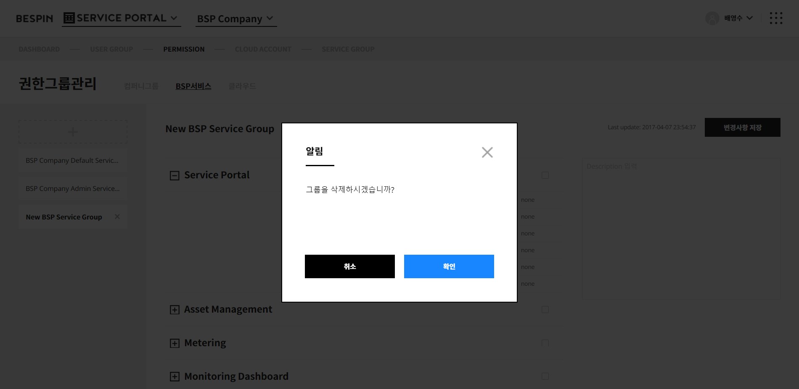 - 서비스 권한 그룹의 삭제가 완료되었습니다.
3. 클라우드
Service Portal - Permission - Cloud사용하고 있는 Perblic Cloud Service와 Cloud Service들의 Account(Subscription)에 대한 접근 권한을 그룹으로 만들 수 있습니다.
클라우드 그룹을 유저 그룹에 연결해 유저 그룹 내 유저들이 확인할 수 있는 Perblic Cloud Service 와 Account(Subscription)의 접근 권한을 설정할 수 있습니다.
3.1 클라우드 그룹 정보 보기
이미 추가된 클라우드 그룹의 정보를 확인할 수 있습니다.
-
클라우드 그룹 목록에서 정보를 확인할 클라우드 그룹을 클릭합니다.
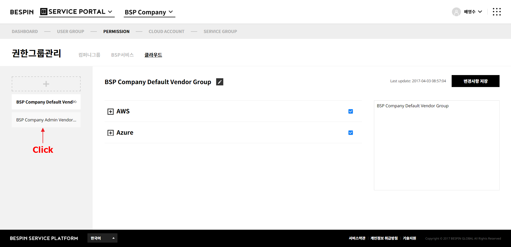
-
클라우드 그룹 상세 화면에 선태한 클라우드 그룹에 속한 Public Cloud Service들이 표시됩니다.
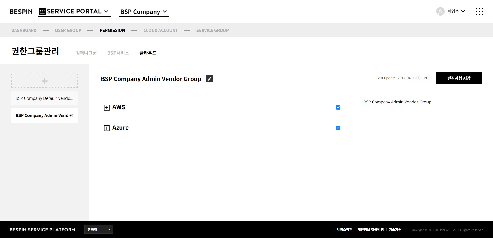
-
Public Cloud Service 별 [+] 버튼을 클릭해 클라우드 그룹에서 확인 가능한 Account(Subscription)들이 표시됩니다.
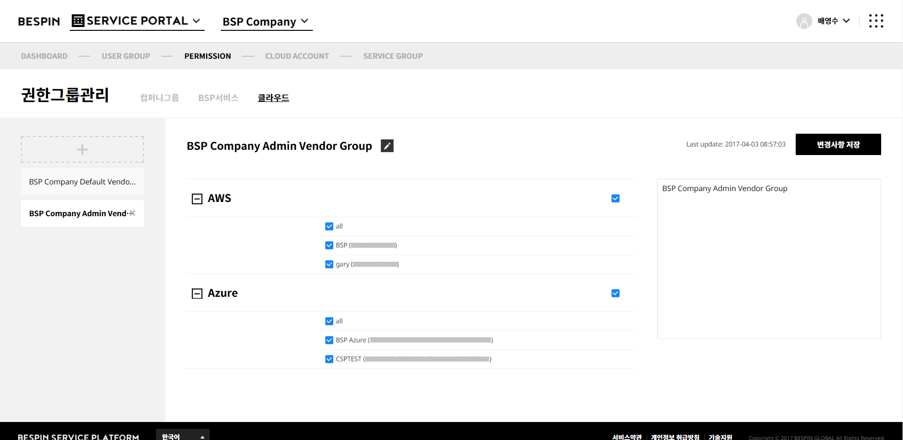
3.2 클라우드 그룹 만들기
새로운 클라우드 그룹을 만들고, 클라우드 그룹에서 사용 가능한 Public Cloud Service와 Account(Subscription)를 설정할 수 있습니다.
-
[클라우드 그룹 추가] 버튼을 클릭합니다.
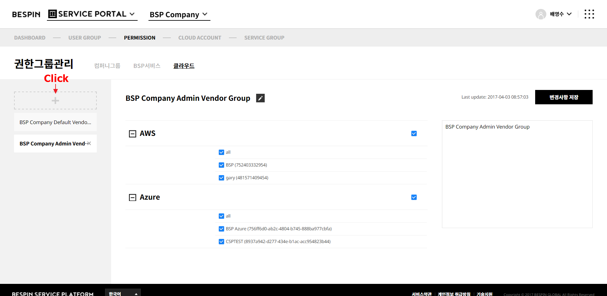
-
"새로운 클라우드 그룹 생성" 팝업이 표시됩니다.
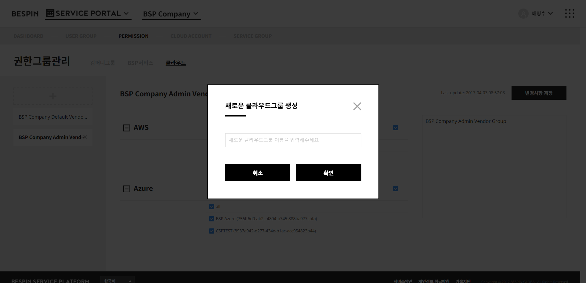
-
"새로운 클라우드 그룹 생성" 팝업에서 추가할 클라우드 그룹의 이름을 입력하고 [확인] 버튼을 클릭합니다.
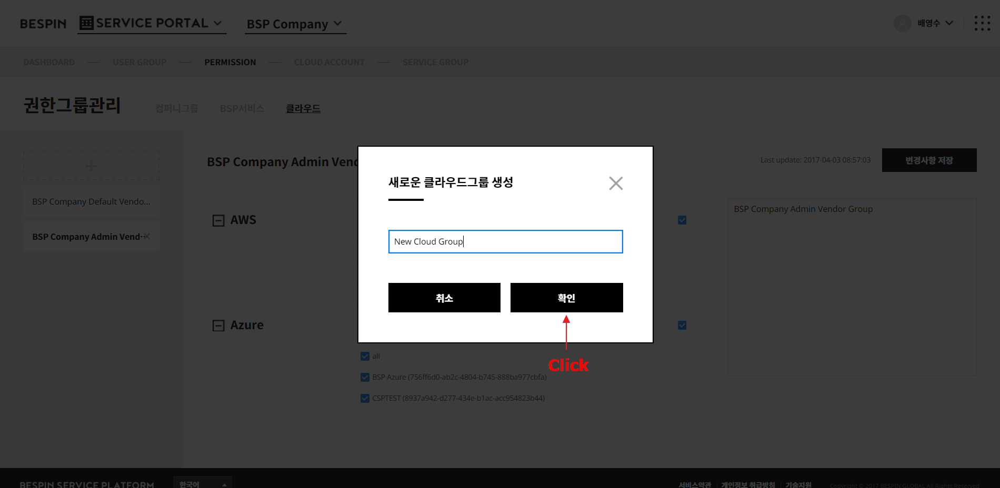
-
클라우드 그룹 목록에 새로운 클라우드 그룹이 추가된 것을 확인할 수 있습니다.
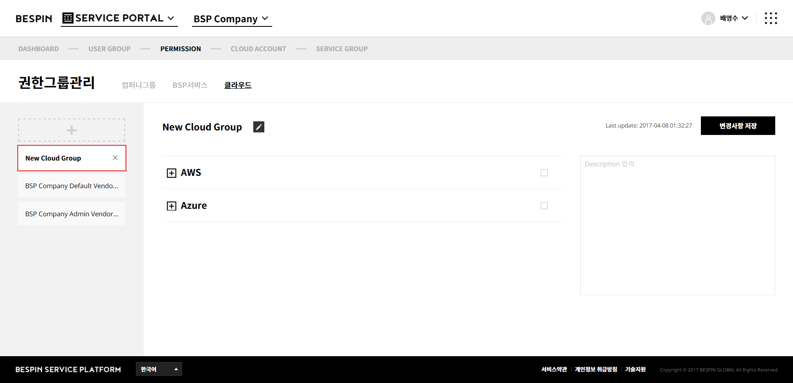
-
클라우드 그룹 상세 화면에 선택 가능한 Public Cloud Service와 Account(Subscription) 목록이 표시됩니다.
Service Portal > Cloud Account 메뉴에서 등록한 계정 정보가 표시됩니다.
Public Cloud Service 의 체크박스를 선택해 해당 서비스의 사용 가능 여부를 선택할 수 있습니다.
그리고 서비스 내 Account(Subscription)의 체크박스를 선택해 해당 계정의 사용 가능 여부를 선택할 수 있습니다.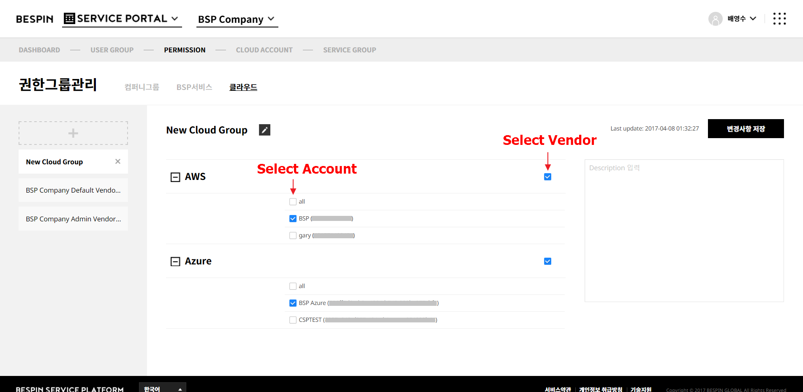 -
[변경사항 저장] 버튼을 클릭합니다.
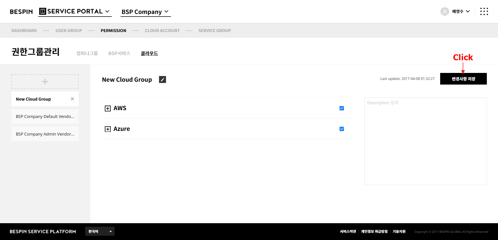
- 새로운 클라우드 그룹의 추가가 완료되었습니다.
3.3 클라우드 그룹 수정하기
3.3.1 클라우드 그룹 이름 바꾸기
- 클라우드 그룹 목록에서 이름을 변경할 클라우드 그룹을 선택합니다.
- 클라우드 그룹 상세 화면에 선택한 클라우드 그룹 정보가 표시됩니다.
-
클라우드 그룹 이름 옆의 [수정] 버튼을 클릭합니다.
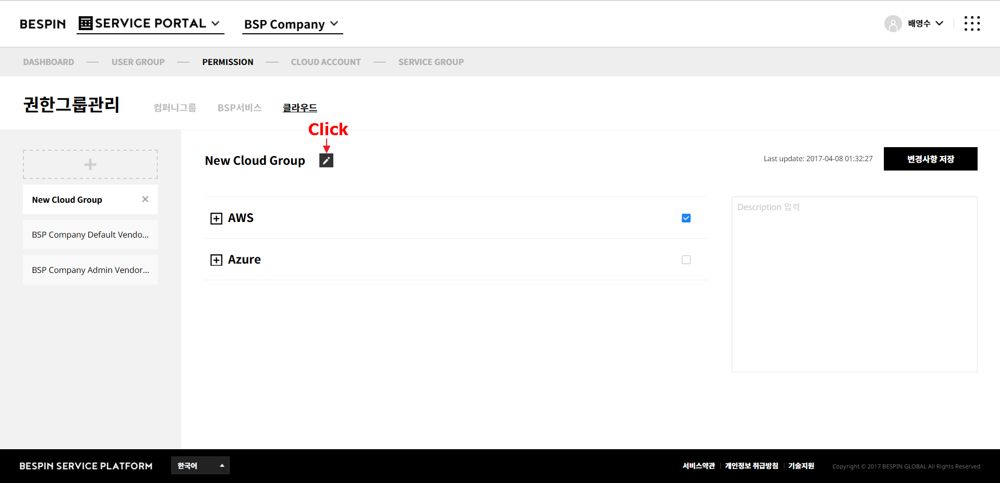
-
클라우드 그룹의 이름이 편집 가능한 상태로 변경됩니다.
클라우드 그룹의 이름을 변경합니다.
-
이름 변경 후, [확인] 버튼을 클릭합니다.
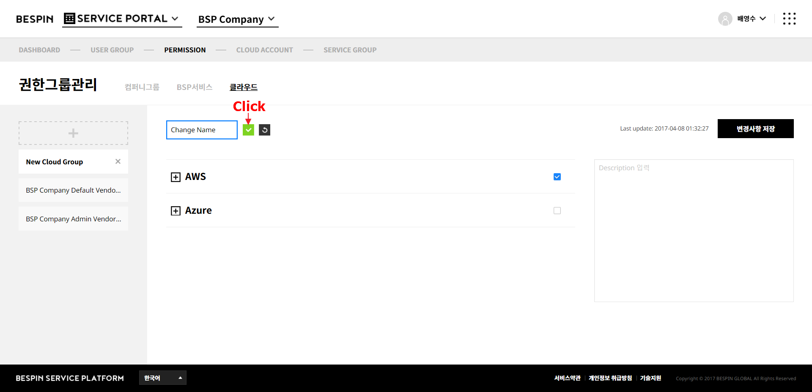
- 클라우드 그룹의 이름 변경이 완료되었습니다.
3.3.2 클라우드 그룹 권한 변경하기
- 클라우드 그룹 목록에서 권한을 변경할 클라우드 그룹을 선택합니다.
- 클라우드 그룹 상세 화면에 선택한 클라우드 그룹에서 사용 가능한 Public Cloud Service의 목록과 확인 가능한 Account(Subscription) 정보가 표시됩니다.
-
Public Cloud Service, Account(Subscription)의 체크박스를 선택 해제 하거나(권한 제거), 체크박스를 선택해 권한을 변경할 수 있습니다.(권한 변경)
-
[변경사항 저장] 버튼을 클릭합니다.
- 서비스 권한 그룹 내 권한 변경이 완료되었습니다.
3.4 클라우드 그룹 삭제하기
추가된 클라우드 그룹을 삭제할 수 있습니다.
- 클라우드 그룹 목록에서 삭제할 클라우드 그룹을 선택합니다.
-
[X] 버튼을 클릭합니다.
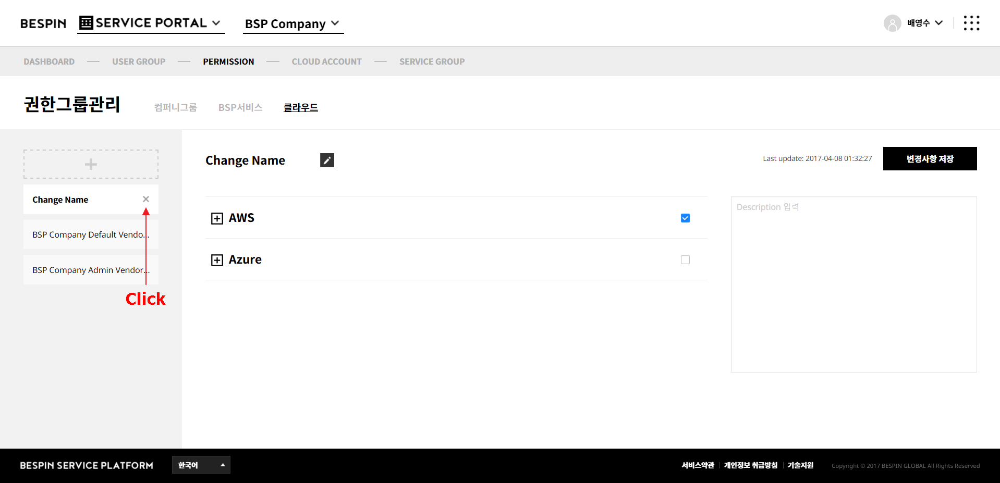
-
그룹 삭제를 확인하는 팝업이 표시됩니다.
팝업의 [확인] 버튼을 클릭합니다.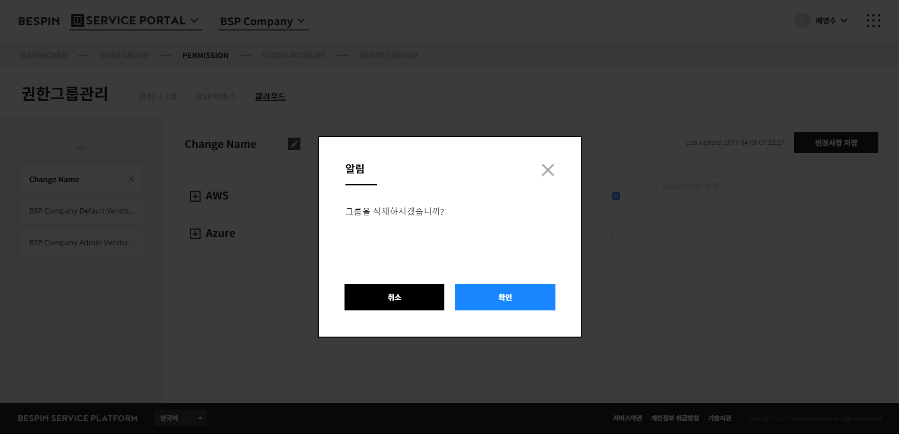 - 서비스 권한 그룹의 삭제가 완료되었습니다.